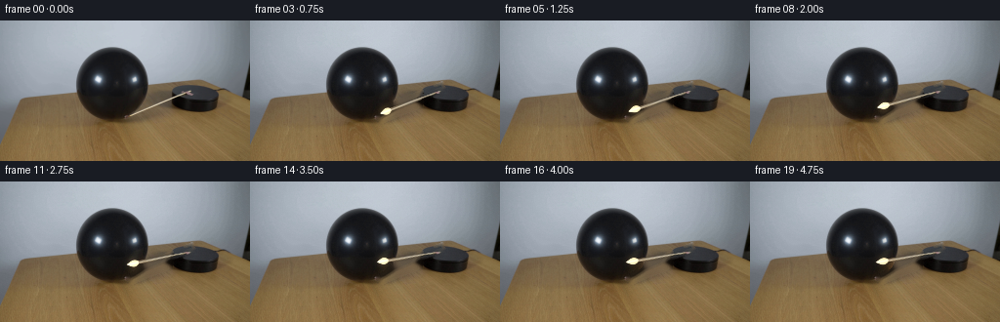
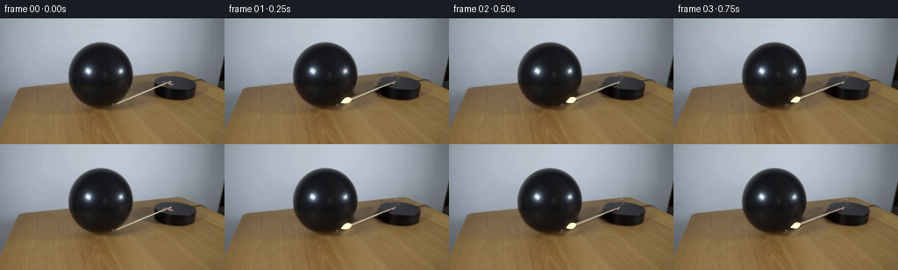
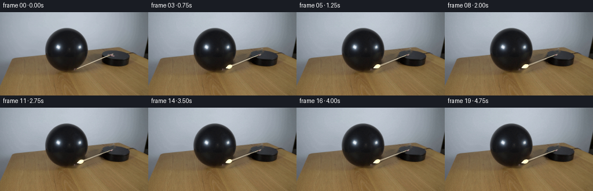
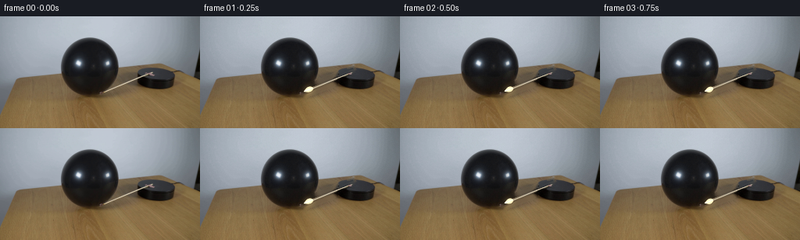

CODING AGENTS AS PIXEL WORLD MODELS
traex/DeepSeek-V4.1-Flash · 0112
点击播放 · 原生 RGB 像素
逐轮保存的候选
回放视频、检查图与代码变化。
每份候选均可单独播放。实际图片检查记录在下方工具轨迹中。
候选 01播放与检查图
点击播放 · 原生 RGB 像素


展开代码变化
--- 上一保存版本
+++ 本次保存版本
@@ -0,0 +1,237 @@
+from pathlib import Path
+
+import cv2
+import numpy as np
+from PIL import Image
+
+import artifact_io
+
+
+ROOT = Path(__file__).resolve().parent
+W, H = 256, 144
+N_FRAMES = 20
+
+# The match is mounted near the upper-right corner of the black platform.
+# Angles are measured in image coordinates: increasing angle is clockwise.
+PIVOT = np.array([195.2, 72.0], dtype=np.float64)
+START_ANGLE = np.deg2rad(158.7)
+END_ANGLE = np.deg2rad(171.4)
+BALLOON_CENTER = np.array([114.7, 67.1], dtype=np.float64)
+BALLOON_RADIUS = 35.3
+
+
+def smoothstep(edge0, edge1, x):
+ t = np.clip((x - edge0) / (edge1 - edge0), 0.0, 1.0)
+ return t * t * (3.0 - 2.0 * t)
+
+
+def ease_in_out(t):
+ return t * t * (3.0 - 2.0 * t)
+
+
+def build_clean_plate(frame):
+ """Remove the initial match while retaining the balloon, platform, and table."""
+ yy, xx = np.mgrid[0:H, 0:W]
+ p0 = np.array([132.5, 97.3])
+ p1 = np.array([196.5, 70.5])
+ direction = p1 - p0
+ direction /= np.linalg.norm(direction)
+ normal = np.array([-direction[1], direction[0]])
+ rel_x = xx - p0[0]
+ rel_y = yy - p0[1]
+ along = rel_x * direction[0] + rel_y * direction[1]
+ across = rel_x * normal[0] + rel_y * normal[1]
+
+ # A narrow core plus a wider soft edge catches the match, flame, and
+ # its antialiased boundary without touching the surrounding objects.
+ corridor = (
+ (along > -3.0)
+ & (along < np.linalg.norm(p1 - p0) + 3.0)
+ & (np.abs(across) < 7.2)
+ )
+ rgb = frame.astype(np.float32)
+ luminance = rgb.mean(axis=2)
+ warmth = rgb[:, :, 0] - rgb[:, :, 2]
+ bright = (luminance > 52.0) & (warmth > 7.0)
+ core = np.abs(across) < 2.2
+ mask = corridor & (bright | core)
+ mask = cv2.dilate(mask.astype(np.uint8), np.ones((3, 3), np.uint8), iterations=1)
+
+ inpainted = cv2.inpaint(
+ cv2.cvtColor(frame, cv2.COLOR_RGB2BGR),
+ (mask * 255).astype(np.uint8),
+ 4,
+ cv2.INPAINT_TELEA,
+ )
+ inpainted = cv2.cvtColor(inpainted, cv2.COLOR_BGR2RGB)
+
+ # Telea is intentionally smooth. A very small amount of neighboring
+ # texture keeps the repaired tabletop from looking like a clean brush mark.
+ blur = cv2.GaussianBlur(inpainted, (0, 0), 0.65)
+ texture = inpainted.astype(np.float32) - blur.astype(np.float32)
+ repair = inpainted.astype(np.float32) + 0.20 * texture
+ alpha = cv2.GaussianBlur(mask.astype(np.float32), (0, 0), 0.7)
+ alpha = np.clip(alpha * 1.8, 0.0, 1.0)[:, :, None]
+ plate = frame.astype(np.float32) * (1.0 - alpha) + repair * alpha
+ return np.clip(plate, 0, 255).astype(np.uint8)
+
+
+def source_at(frame, x, y):
+ """Bilinear sample with edge-safe coordinates."""
+ x = np.clip(x, 0, W - 1.001)
+ y = np.clip(y, 0, H - 1.001)
+ x0 = np.floor(x).astype(np.int32)
+ y0 = np.floor(y).astype(np.int32)
+ fx = (x - x0)[..., None]
+ fy = (y - y0)[..., None]
+ x1 = np.minimum(x0 + 1, W - 1)
+ y1 = np.minimum(y0 + 1, H - 1)
+ top = frame[y0, x0] * (1.0 - fx) + frame[y0, x1] * fx
+ bottom = frame[y1, x0] * (1.0 - fx) + frame[y1, x1] * fx
+ return top * (1.0 - fy) + bottom * fy
+
+
+def render_match(frame, plate, angle, frame_index):
+ """Render the match as a rigid, antialiased object and composite it."""
+ yy, xx = np.mgrid[0:H, 0:W]
+ px = xx.astype(np.float64) - PIVOT[0]
+ py = yy.astype(np.float64) - PIVOT[1]
+ direction = np.array([np.cos(angle), np.sin(angle)])
+ normal = np.array([-direction[1], direction[0]])
+ u = px * direction[0] + py * direction[1]
+ v = px * normal[0] + py * normal[1]
+
+ # Texture is sampled in the original pose, then mapped into the moving
+ # local frame. This preserves the source wood and flame shading.
+ orig_direction = np.array([np.cos(START_ANGLE), np.sin(START_ANGLE)])
+ orig_normal = np.array([-orig_direction[1], orig_direction[0]])
+ sample_x = PIVOT[0] + u * orig_direction[0] + v * orig_normal[0]
+ sample_y = PIVOT[1] + u * orig_direction[1] + v * orig_normal[1]
+ sampled = source_at(frame, sample_x, sample_y)
+
+ stick_half_width = 1.05 + 0.42 * smoothstep(0.0, 53.0, u)
+ stick_edge = stick_half_width + 0.65
+ stick_alpha = 1.0 - smoothstep(stick_half_width - 0.15, stick_edge, np.abs(v))
+ stick_alpha *= smoothstep(-2.0, 3.5, u) * (1.0 - smoothstep(55.5, 60.0, u))
+
+ luminance = sampled.mean(axis=2)
+ warmth = sampled[:, :, 0] - sampled[:, :, 2]
+ material = smoothstep(42.0, 95.0, luminance) * smoothstep(2.0, 19.0, warmth)
+ stick_alpha *= 0.35 + 0.65 * material
+
+ # A small pointed flame continues beyond the wooden head. It flickers
+ # laterally by less than a pixel and lengthens slightly from frame to frame.
+ flicker = 0.32 * np.sin(frame_index * 1.55) + 0.12 * np.sin(frame_index * 3.1 + 0.7)
+ flame_base = 54.0
+ flame_length = 14.0 + 0.75 * np.sin(frame_index * 1.7 + 0.2)
+ q = np.clip((u - flame_base) / flame_length, 0.0, 1.0)
+ center_v = flicker * np.sin(np.pi * q)
+ flame_half_width = 0.55 + 3.25 * np.sin(np.pi * np.clip(q * 1.08, 0.0, 1.0)) ** 0.85
+ flame_half_width *= 1.0 - 0.72 * q**2
+ flame_dist = np.abs(v - center_v)
+ flame_alpha = 1.0 - smoothstep(flame_half_width - 0.35, flame_half_width + 0.85, flame_dist)
+ flame_alpha *= (u >= flame_base) * (u <= flame_base + flame_length)
+ flame_alpha *= smoothstep(0.0, 0.10, q) * (1.0 - smoothstep(0.86, 1.0, q))
+
+ flame_rgb = np.empty_like(sampled)
+ flame_rgb[:] = np.array([241.0, 224.0, 176.0])
+ flame_rgb = (
+ flame_rgb * (1.0 - 0.38 * q[:, :, None])
+ + np.array([255.0, 249.0, 225.0]) * (0.38 * q[:, :, None])
+ )
+ flame_core = 1.0 - smoothstep(0.0, 1.65, flame_dist)
+ flame_rgb = flame_rgb * (1.0 - 0.55 * flame_core[:, :, None]) + 255.0 * (0.55 * flame_core[:, :, None])
+
+ alpha = np.maximum(stick_alpha, flame_alpha)
+ alpha = np.clip(alpha, 0.0, 1.0)
+
+ # A faint drop shadow grounds the rotating match on the platform.
+ shadow_alpha = cv2.GaussianBlur(alpha.astype(np.float32), (0, 0), 1.15)
+ shadow = np.zeros_like(plate, dtype=np.float32)
+ shadow[:, :, 0] = 4.0
+ shadow[:, :, 1] = 3.0
+ shadow[:, :, 2] = 2.0
+ shadow_strength = 0.30 * shadow_alpha[:, :, None]
+ result = plate.astype(np.float32) * (1.0 - shadow_strength) + shadow * shadow_strength
+
+ match_rgb = sampled * (1.0 - flame_alpha[:, :, None]) + flame_rgb * flame_alpha[:, :, None]
+ result = result * (1.0 - alpha[:, :, None]) + match_rgb * alpha[:, :, None]
+
+ # A compact warm glow makes the small flame readable at this resolution.
+ flame_center_u = flame_base + 0.46 * flame_length
+ flame_center = PIVOT + flame_center_u * direction
+ dist2 = (xx - flame_center[0]) ** 2 + (yy - flame_center[1]) ** 2
+ glow = np.exp(-dist2 / (2.0 * 4.1**2)) * (0.15 + 0.035 * np.sin(frame_index * 1.9))
+ result += glow[:, :, None] * np.array([255.0, 217.0, 150.0])
+
+ return np.clip(result, 0, 255).astype(np.uint8), flame_center
+
+
+def add_contact_response(frame, frame_index, flame_center, plate):
+ """Add a subtle balloon-surface response only after the match reaches it."""
+ contact_start = 14
+ if frame_index < contact_start:
+ return frame
+
+ yy, xx = np.mgrid[0:H, 0:W]
+ q = smoothstep(contact_start, 18.0, float(frame_index))
+ # The upper-right edge of the balloon is the visible contact region.
+ contact = np.array([145.0, 86.5])
+ dist2 = (xx - contact[0]) ** 2 + (yy - contact[1]) ** 2
+ balloon_region = (
+ ((xx - BALLOON_CENTER[0]) / (BALLOON_RADIUS + 1.0)) ** 2
+ + ((yy - BALLOON_CENTER[1]) / (BALLOON_RADIUS + 1.0)) ** 2
+ < 1.0
+ )
+ heat = np.exp(-dist2 / (2.0 * 3.5**2)) * balloon_region * q
+ out = frame.astype(np.float32)
+ out += heat[:, :, None] * np.array([42.0, 26.0, 10.0])
+
+ # A tiny inward dimple is represented by darkening and a thin warm rim.
+ rim = np.exp(-((dist2 - 13.0) ** 2) / (2.0 * 2.0**2)) * balloon_region * q
+ out *= 1.0 - 0.10 * rim[:, :, None]
+ out += 0.08 * rim[:, :, None] * np.array([255.0, 188.0, 100.0])
+ return np.clip(out, 0, 255).astype(np.uint8)
+
+
+def make_frames():
+ source = np.asarray(Image.open(ROOT / "first_frame.png").convert("RGB"))
+ assert source.shape == (H, W, 3)
+ plate = build_clean_plate(source)
+ Image.fromarray(plate).save(ROOT / ".tmp" / "clean_plate.png")
+
+ frames = []
+ centers = []
+ for i in range(N_FRAMES):
+ if i == 0:
+ frames.append(source.copy())
+ continue
+
+ if i <= 15:
+ t = i / 15.0
+ angle = START_ANGLE + (END_ANGLE - START_ANGLE) * ease_in_out(t)
+ else:
+ # Settle at contact with a very small elastic recoil.
+ settle = 1.0 - 0.055 * np.exp(-0.55 * (i - 15)) * np.cos(1.35 * (i - 15))
+ angle = START_ANGLE + (END_ANGLE - START_ANGLE) * settle
+
+ frame, flame_center = render_match(source, plate, angle, i)
+ frame = add_contact_response(frame, i, flame_center, plate)
+ frames.append(frame)
+ centers.append(flame_center)
+
+ # Frame zero is the contract's exact first frame. For later frames, retain
+ # the source's photographic grain in untouched regions.
+ rng = np.random.default_rng(112)
+ grain = rng.normal(0.0, 0.7, size=(H, W, 1))
+ for i in range(1, N_FRAMES):
+ frames[i] = np.clip(frames[i].astype(np.float32) + grain, 0, 255).astype(np.uint8)
+
+ return np.stack(frames, axis=0)
+
+
+if __name__ == "__main__":
+ generated = make_frames()
+ assert generated.shape == (20, 144, 256, 3)
+ assert generated.dtype == np.uint8
+ artifact_io.save(generated, ROOT)
候选 02播放与检查图
点击播放 · 原生 RGB 像素


展开代码变化
--- 上一保存版本
+++ 本次保存版本
@@ -15,7 +15,7 @@
# Angles are measured in image coordinates: increasing angle is clockwise.
PIVOT = np.array([195.2, 72.0], dtype=np.float64)
START_ANGLE = np.deg2rad(158.7)
-END_ANGLE = np.deg2rad(171.4)
+END_ANGLE = np.deg2rad(160.15)
BALLOON_CENTER = np.array([114.7, 67.1], dtype=np.float64)
BALLOON_RADIUS = 35.3
@@ -183,14 +183,14 @@
+ ((yy - BALLOON_CENTER[1]) / (BALLOON_RADIUS + 1.0)) ** 2
< 1.0
)
- heat = np.exp(-dist2 / (2.0 * 3.5**2)) * balloon_region * q
+ heat = np.exp(-dist2 / (2.0 * 2.8**2)) * balloon_region * q
out = frame.astype(np.float32)
- out += heat[:, :, None] * np.array([42.0, 26.0, 10.0])
+ out += heat[:, :, None] * np.array([18.0, 9.0, 3.0])
# A tiny inward dimple is represented by darkening and a thin warm rim.
- rim = np.exp(-((dist2 - 13.0) ** 2) / (2.0 * 2.0**2)) * balloon_region * q
- out *= 1.0 - 0.10 * rim[:, :, None]
- out += 0.08 * rim[:, :, None] * np.array([255.0, 188.0, 100.0])
+ rim = np.exp(-((dist2 - 11.0) ** 2) / (2.0 * 1.8**2)) * balloon_region * q
+ out *= 1.0 - 0.045 * rim[:, :, None]
+ out += 0.025 * rim[:, :, None] * np.array([255.0, 188.0, 100.0])
return np.clip(out, 0, 255).astype(np.uint8)
可观测工具轨迹
实际执行的命令与返回图片。
命令 1exit 0
/bin/bash -c "pwd && rg --files -g '"'!*.mp4'"' -g '"'!*.webm'"' | sed -n '1,200p'"
命令 2exit 0
/bin/bash -c "sed -n '1,240p' prompt.txt"
命令 3exit 0
/bin/bash -c "sed -n '1,280p' GENERATION_RULES.md"
命令 4exit 127
/bin/bash -c "ls -lah && file first_frame.png && python3 - <<'PY'
from PIL import Image
im=Image.open('first_frame.png')
print(im.size, im.mode)
PY"命令 5exit 0
/bin/bash -c "sed -n '1,260p' artifact_io.py"
命令 6exit 0
/bin/bash -c "python3 - <<'PY'
from PIL import Image
import numpy as np
im=Image.open('first_frame.png').convert('RGB')
a=np.array(im)
print('shape',a.shape,'dtype',a.dtype)
print('overall min/max/mean',a.min(axis=(0,1)),a.max(axis=(0,1)),a.mean(axis=(0,1)))
# 16x9 mean brightness ascii
v=a.mean(2)
for gy in range(0,144,8):
line=''
for gx in range(0,256,8):
b=v[gy:gy+8,gx:gx+8].mean()
line += ' .:-=+*#%@'[min(9,int(b/256*10))]
print(f'{gy:3d} '+line)
print('samples:')
for y,x in [(0,0),(10,10),(72,128),(143,255),(120,40),(100,70),(80,120),(60,180),(130,230)]:
print((x,y), a[y,x].tolist())
PY"命令 7exit 0
/bin/bash -c "python3 - <<'PY'
from PIL import Image
from collections import Counter
im=Image.open('first_frame.png').convert('RGB')
a=Image.open('first_frame.png').convert('RGB')
c=Counter(a.getdata())
print('unique colors',len(c))
for col,n in c.most_common(30): print(col,n)
PY"命令 8exit 0
/bin/bash -c "python3 - <<'PY'
from PIL import Image
import numpy as np
from sklearn.cluster import KMeans
im=np.array(Image.open('first_frame.png').convert('RGB'))
# sample all pixels, kmeans 12
x=im.reshape(-1,3)
km=KMeans(12, random_state=0, n_init=10).fit(x)
lab=km.labels_.reshape(im.shape[:2])
for i,c in enumerate(km.cluster_centers_):
ys,xs=np.where(lab==i)
print(i, 'rgb', np.round(c).astype(int).tolist(), 'n',len(xs), 'bbox', (xs.min(),ys.min(),xs.max(),ys.max()), 'meanxy', (round(xs.mean(),1),round(ys.mean(),1)))
# create text map each 4x4 using dominant cluster
chars='0123456789ABCDEFGHIJ'
print('label map 4x4 blocks')
for y in range(0,144,4):
s=''
for xx in range(0,256,4):
vals,cts=np.unique(lab[y:y+4,xx:xx+4],return_counts=True)
s+=chars[vals[cts.argmax()]]
print(f'{y:03d} '+s)
PY"命令 9exit 0
/bin/bash -c "python3 - <<'PY'
from PIL import Image
import numpy as np
a=np.array(Image.open('first_frame.png').convert('RGB'))
# classify each pixel: D dark, W bright/background, B brown, G gray, O other
v=a.mean(2); sat=a.max(2)-a.min(2); brown=(a[:,:,0]>a[:,:,1]+5)&(a[:,:,1]>a[:,:,2]+10)
gray=sat<20
classes=np.full((144,256),'.',dtype='<U1')
classes[(v<45)]='D'
classes[(v>=45)&(v<90)]='d'
classes[(v>=90)&gray]='G'
classes[brown]='B'
classes[(v>150)&~brown]='W'
# run encode selected rows
for y in [0,15,25,30,31,35,40,45,50,55,60,65,70,75,80,85,90,95,100,105,110,120,130,143]:
row=''.join(classes[y])
runs=[]; st=0
for i in range(1,257):
if i==256 or row[i]"'!=row[st]:
if i-st>=2: runs.append(f'"'{st}-{i-1}:{row[st]}')
st=i
print(f'y={y:3d}', ' '.join(runs))
# coarse map every 2 px using blocks dominant classes
print('coarse map (2x2 blocks):')
for y in range(0,144,2):
s=''
for x in range(0,256,2):
vals,cts=np.unique(classes[y:y+2,x:x+2],return_counts=True)
s+=vals[cts.argmax()]
print(f'{y:03d} '+s)
PY"命令 10exit 0
/bin/bash -c "python3 - <<'PY'
from PIL import Image
import numpy as np
a=np.array(Image.open('first_frame.png').convert('RGB')).astype(int)
r,g,b=a.transpose(2,0,1)
masks={
'red':(r>g+30)&(r>b+40)&(r>100),
'orange':(r>g+12)&(g>b+15)&(r>120)&(g>60),
'yellow':(r>140)&(g>120)&(b<110)&(abs(r-g)<80),
'bright':(r+g+b>650),
'dark':(r+g+b<110),
}
for n,m in masks.items():
ys,xs=np.where(m)
print(n,'n',len(xs), 'bbox', None if not len(xs) else (xs.min(),ys.min(),xs.max(),ys.max()))
# list coarse bbox clusters via connected comps cv2
if len(xs):
import cv2
num,lab,stats,cent=cv2.connectedComponentsWithStats(m.astype('uint8'),8)
comps=sorted([(stats[i,4],tuple(stats[i,:4]),tuple(np.round(cent[i],1))) for i in range(1,num)],reverse=True)[:12]
for z in comps: print(' ',z)
PY"命令 11exit 0
/bin/bash -c "python3 - <<'PY'
from PIL import Image
import numpy as np
a=np.array(Image.open('first_frame.png').convert('RGB')).astype(int)
# dump colors and rows around candidate match tip / platform
for y in [55,57,58,59,60,61,62,63,64,65,66,68,70,72,74,76,78,80,82,84,86,88,90,92,94,96,98,100]:
vals=[]
# color runs x 0-256 quantized to 8 levels
q=(a[y]//16)
# only unusual (red orange) positions
red=(a[y,:,0]>a[y,:,1]+25)&(a[y,:,0]>a[y,:,2]+35)&(a[y,:,0]>100)
xs=np.where(red)[0]
if len(xs): print('y',y,'red xs',xs.min(),xs.max(),'n',len(xs), 'pixels', [a[y,x].tolist() for x in xs[:20]])
# print all pixels for crop x80-150 y55-105 as char classes by nearest palette
for y in range(54,104,2):
s=''
for x in range(76,156,2):
p=a[y,x]
if p.mean()<30: c='K'
elif p.mean()<60: c='D'
elif p[0]>p[1]+20 and p[0]>p[2]+30: c='R'
elif p[0]>p[1]+8 and p[1]>p[2]+10: c='b'
elif p.mean()>140: c='.'
elif p.mean()>90: c='g'
else: c='d'
s+=c
print(f'{y:03d} {s}')
PY"命令 12exit 0
/bin/bash -c "python3 - <<'PY'
from PIL import Image
import numpy as np
a=np.array(Image.open('first_frame.png').convert('RGB')).astype(int)
r,g,b=a.transpose(2,0,1)
# saturated flame-like pixels upper 105
m=(r>120)&(r>g*1.35)&(r>b*1.7)&(g>b*1.15)
for y in range(20,105):
xs=np.where(m[y])[0]
if len(xs): print(y, [(int(x),a[y,x].tolist()) for x in xs])
print('bright chromatic upper 105')
m=(a.max(2)>180)&(a.max(2)-a.min(2)>40)
for y in range(20,105):
xs=np.where(m[y])[0]
if len(xs): print(y, [(int(x),a[y,x].tolist()) for x in xs])
PY"命令 13exit 0
/bin/bash -c "python3 - <<'PY'
from PIL import Image
import numpy as np
a=np.array(Image.open('first_frame.png').convert('RGB')).astype(int)
# crop 80..160 60..105 values as chars based on nearest color cluster custom
pal=np.array([[190,198,208],[150,160,170],[80,70,55],[35,30,28],[150,125,85],[190,170,135],[120,100,70]])
names='BGdbopc'
for y in range(60,105):
s=''
for x in range(80,160):
p=a[y,x]
# special fire colors: bright cream
if p[0]>180 and p[1]>150 and p[2]>100: c='F'
else:
ds=((pal-p)**2).sum(1); c=names[ds.argmin()]
s+=c
print(f'{y:03d} {s}')
PY"命令 14exit 1
/bin/bash -c "python3 - <<'PY'
from PIL import Image
import numpy as np
a=np.array(Image.open('first_frame.png').convert('RGB')).astype(int)
# print rows 50-100 x 80-155 using exact gray / brightness classes more nuanced
# palette assign via kmeans on crop only, but report clusters
from sklearn.cluster import KMeans
crop=a[50:105,75:160].reshape(-1,3)
km=KMeans(16,random_state=1,n_init=10).fit(crop)
cs=km.cluster_centers_.round().astype(int)
print(list(enumerate(cs.tolist())))
# coarse dominant cluster 2x2 crop
lab=km.labels_.reshape(30,85)
chars='0123456789abcdef'
for yy in range(0,30,2):
s=''
for xx in range(0,85,2):
vals,cts=np.unique(lab[yy:yy+2,xx:xx+2],return_counts=True)
s+=chars[vals[cts.argmax()]]
print(f'{50+yy*2:03d} {s}')
PY"命令 15exit 0
/bin/bash -c "python3 - <<'PY'
from PIL import Image
import numpy as np
from sklearn.cluster import KMeans
a=np.array(Image.open('first_frame.png').convert('RGB')).astype(int)
crop=a[50:105,75:160]
km=KMeans(16,random_state=1,n_init=10).fit(crop.reshape(-1,3))
lab=km.labels_.reshape(crop.shape[:2])
chars='0123456789abcdef'
for yy in range(0,55,2):
s=''
for xx in range(0,85,2):
vals,cts=np.unique(lab[yy:yy+2,xx:xx+2],return_counts=True)
s+=chars[vals[cts.argmax()]]
print(f'{50+yy:03d} {s}')
PY"命令 16exit 0
/bin/bash -c "python3 - <<'PY'
from PIL import Image
import numpy as np
a=np.array(Image.open('first_frame.png').convert('RGB')).astype(int)
# exact profile of likely match: search lines of bright nongray from 90,85 to 150,75 etc
for y in range(70,100):
vals=[]
for x in range(75,180):
p=a[y,x]
# tan bright ratio
if p[0]>150 and p[1]>130 and p[2]>80 and p[0]-p[2]>25:
vals.append((x,p.tolist()))
if vals:
print(y, vals)
PY"命令 17exit 0
/bin/bash -c "python3 - <<'PY'
from PIL import Image
import numpy as np
a=np.array(Image.open('first_frame.png').convert('RGB')).astype(int)
# print original crop via a temp pixel art 8x upscale no viewing though; numeric saliency descriptors
# get dark components and color at upper/right region
import cv2
v=a.mean(2); sat=a.max(2)-a.min(2)
m=((v<70)&(sat<35)).astype('uint8')
num,lab,stats,cent=cv2.connectedComponentsWithStats(m,8)
for i in range(1,num):
x,y,w,h,n=stats[i]
if n>20: print('dark comp',i,'bbox',x,y,w,h,'n',n,'cent',cent[i], 'mean',a[lab==i].mean(0))
# color comps upper dark region with floodfill threshold brown/red? use pixel map 1 px for x130-210 y55-100 chars grayscale
for y in range(55,100):
s=''
for x in range(125,215):
p=a[y,x]; m=p.mean()
c='@' if m<20 else '#' if m<40 else 'D' if m<60 else 'd' if m<80 else 'g' if m<110 else 'G' if m<145 else 'W'
if p[0]>p[1]+25 and p[0]>p[2]+35: c='R'
elif p[0]>p[1]+12 and p[1]>p[2]+12: c='o'
s+=c
print(f'{y:03d} {s}')
PY"命令 18exit 0
/bin/bash -c "python3 - <<'PY'
from PIL import Image
import numpy as np
a=np.array(Image.open('first_frame.png').convert('RGB')).astype(int)
# generate a pixel ascii mapping with more explicit clusters and print crop x120-215 y55-105 at 1 px, grayscale/color compact
# also output nearest cluster labels with palette fixed from known colors
pal=np.array([[20,20,20],[40,35,30],[65,55,45],[90,75,55],[120,100,70],[145,125,90],[170,155,120],[195,180,145],[220,205,170],[130,140,150],[180,190,200]])
chars='0123456789AB'
for y in range(55,105):
s=''
for x in range(120,215):
p=a[y,x]
# rgb distance
c=chars[((pal-p)**2).sum(1).argmin()]
s+=c
print(f'{y:03d} {s}')
PY"命令 19exit 0
/bin/bash -c "python3 - <<'PY'
from PIL import Image
import numpy as np
a=np.array(Image.open('first_frame.png').convert('RGB')).astype(int)
for y in range(92,104):
print('y',y)
for x in range(122,145):
print(f'{x}:{a[y,x,0]:3d},{a[y,x,1]:3d},{a[y,x,2]:3d}',end=' ')
print()
PY"命令 20exit 0
/bin/bash -c "python3 - <<'PY'
from PIL import Image
import numpy as np
a=np.array(Image.open('first_frame.png').convert('RGB')).astype(int)
# crop values x160-205 y70-95 as char by nearest palette colors; print exact y rows with high brightness
for y in range(68,96):
xs=[]
for x in range(150,210):
p=a[y,x]
if p[0]>140 and p[1]>125 and p[2]>70:
xs.append((x,p.tolist()))
if xs: print(y,xs)
PY"命令 21exit 0
/bin/bash -c "python3 - <<'PY'
from PIL import Image
import numpy as np
a=np.array(Image.open('first_frame.png').convert('RGB')).astype(int)
# Compare x,y known match shaft centerline candidates. Print color stats patches 5x5 at manually selected
for y in range(75,99,2):
vals=[]
for x in range(125,200,3):
p=a[y:y+2,x:x+2].mean((0,1))
vals.append(f'{x}:{p[0]:.0f},{p[1]:.0f},{p[2]:.0f}')
print(y,' | '.join(vals))
PY"命令 22exit 0
/bin/bash -c "command -v ffmpeg || true; python3 - <<'PY'
import cv2
print('cv2',cv2.__version__)
PY"命令 23exit 0
/bin/bash -c "python3 - <<'PY'
from PIL import Image
import numpy as np
a=np.array(Image.open('first_frame.png').convert('RGB')).astype(int)
# Print row intensities and exact values for the diagonal from 130,98 to 200,70; find match material by local max brightness excluding flame
# Flame center at x~132 y~98? likely match head. Check RGB by points
for y in range(65,102):
# contiguous regions where warm and bright
m=(a[y,:,0]>120)&(a[y,:,1]>100)&(a[y,:,0]-a[y,:,2]>20)
xs=np.where(m)[0]
if len(xs):
runs=[]; st=xs[0]; pr=xs[0]
for x in xs[1:]:
if x>pr+1: runs.append((st,pr)); st=x
pr=x
runs.append((st,pr))
print(y,runs)
PY"命令 24exit 0
/bin/bash -c "python3 - <<'PY'
from PIL import Image
import numpy as np
a=np.array(Image.open('first_frame.png').convert('RGB')).astype(int)
# print exact RGB patch around suspected balloon/contact point, x75-140 y45-105 in compact 2-char hex-ish values
# use 3x3 median colors as labels maybe easier output values 16 blocks
for y in range(45,101,2):
s=''
for x in range(75,141,2):
p=np.median(a[y:y+2,x:x+2].reshape(-1,3),0).astype(int)
s += f' {p[0]:02x}{p[1]:02x}{p[2]:02x}'
print(y,s)
PY"命令 25exit 0
/bin/bash -c "python3 - <<'PY'
from PIL import Image
import numpy as np
a=np.array(Image.open('first_frame.png').convert('RGB')).astype(int)
# Pixel color profile along diagonal estimated shaft. Let's use local max along normal. print x from 120-210 y rows 60-100 as brightness char
for y in range(55,102):
s=''
for x in range(115,211):
p=a[y,x]
m=p.mean()
c=' ' if m<18 else '.' if m<28 else ':' if m<38 else '-' if m<50 else '=' if m<65 else '+' if m<85 else '*' if m<110 else '#' if m<140 else '%' if m<175 else '@' if m<210 else '&'
s+=c
print(f'{y:03d} {s}')
PY"命令 26exit 0
/bin/bash -c "python3 - <<'PY'
from PIL import Image
import numpy as np
a=np.array(Image.open('first_frame.png').convert('RGB')).astype(int)
# exact class runs per row for x60-250, classify 4 coarse palettes with nearest colors
pal=np.array([[25,25,25],[95,80,55],[140,115,75],[170,180,190],[205,195,170],[255,255,255]])
chars='KbtgWX'
for y in [30,35,40,45,50,55,60,65,70,75,80,85,90,95,100,105]:
s=''
for x in range(60,240):
p=a[y,x]
c=chars[((pal-p)**2).sum(1).argmin()]
s+=c
print(f'{y:03d} {s}')
PY"命令 27exit 0
/bin/bash -c "python3 - <<'PY'
from PIL import Image
import numpy as np
a=np.array(Image.open('first_frame.png').convert('RGB')).astype(int)
# candidate ellipse center x115 y66, mask values around boundary inspect. determine black balloon boundary equation by brightness and class.
# fit ellipse from dark region bbox? components 79,29,72,73. But likely center 115,66 radius ~36.
for y in range(28,104):
xs=np.where(a[y,:,0]+a[y,:,1]+a[y,:,2]<100)[0]
if len(xs):
runs=[]; st=xs[0]; pr=xs[0]
for x in xs[1:]:
if x>pr+1: runs.append((st,pr)); st=x
pr=x
runs.append((st,pr))
print(y,runs)
PY"命令 28exit 0
/bin/bash -c "python3 - <<'PY'
from PIL import Image
import numpy as np
a=np.array(Image.open('first_frame.png').convert('RGB')).astype(int)
# inspect colors x176-220 y74-94: likely match? print grayscale map with thresholds 5 levels
for y in range(72,96):
s=''
for x in range(170,222):
p=a[y,x]; m=p.mean()
c='@' if m<10 else '#' if m<20 else 'D' if m<35 else 'd' if m<50 else 'g' if m<70 else 'G' if m<95 else 'W' if m<125 else 'x' if m<155 else 'X' if m<190 else '&'
s+=c
print(f'{y:03d} {s}')
print('rgb points')
for y in range(72,95):
for x in range(170,222):
p=a[y,x]
if p.mean()>100:
pass
PY"命令 29exit 0
/bin/bash -c "python3 - <<'PY'
from PIL import Image
import numpy as np
a=np.array(Image.open('first_frame.png').convert('RGB')).astype(int)
# use canny/hough lines on upper region to detect match shaft
import cv2
img=a.astype('uint8')
gray=cv2.cvtColor(img,cv2.COLOR_RGB2GRAY)
edges=cv2.Canny(gray,20,60)
lines=cv2.HoughLinesP(edges[60:110,70:240],1,np.pi/180,threshold=12,minLineLength=15,maxLineGap=4)
print('lines',None if lines is None else len(lines))
if lines is not None:
for l in sorted(lines[:,0,:].tolist(), key=lambda q: -((q[2]-q[0])**2+(q[3]-q[1])**2))[:30]: print(l, 'abs',(l[0]+70,l[1]+60,l[2]+70,l[3]+60))
PY"命令 30exit 0
/bin/bash -c "python3 - <<'PY'
from PIL import Image
import numpy as np
a=np.array(Image.open('first_frame.png').convert('RGB')).astype(int)
# print crop x135-180 y85-105 where shaft crosses to balloon as char map 1px
for y in range(84,105):
s=''
for x in range(135,181):
p=a[y,x]; m=p.mean()
c='@' if m<10 else '#' if m<20 else 'D' if m<35 else 'd' if m<50 else 'g' if m<70 else 'G' if m<95 else 'W' if m<125 else 'x' if m<155 else 'X' if m<190 else '&'
s+=c
print(f'{y:03d} {s}')
PY"命令 31exit 0
/bin/bash -c "python3 - <<'PY'
from PIL import Image
import numpy as np
a=np.array(Image.open('first_frame.png').convert('RGB')).astype(int)
# print high-res crop x108-150 y88-108 as brightness/color classes
for y in range(88,108):
s=''
for x in range(108,151):
p=a[y,x]; m=p.mean()
if p[0]>p[1]+35 and p[0]>p[2]+50: c='R'
elif p[0]>p[1]+15 and p[1]>p[2]+10: c='o'
elif m<20: c='@'
elif m<35: c='#'
elif m<50: c='D'
elif m<70: c='d'
elif m<90: c='g'
elif m<115: c='G'
elif m<145: c='W'
elif m<180: c='x'
elif m<215: c='X'
else: c='&'
s+=c
print(f'{y:03d} {s}')
print('exact values along x108-150 y94-104')
for y in range(94,105):
print('y',y)
for x in range(108,151):
p=a[y,x]
print(f'{x}:{p[0]},{p[1]},{p[2]}',end=' ')
print()
PY"命令 32exit 0
/bin/bash -c "python3 - <<'PY' import numpy as np P=np.array([179.,80.]); C=np.array([113.,66.]); rx,ry=33,35 for deg in [159,160,161,162,163,164,165,166,167,168,170]: th=np.deg2rad(deg); d=np.array([np.cos(th),np.sin(th)]); L=46 e=P-C A=(d[0]/rx)**2+(d[1]/ry)**2 B=2*(e[0]*d[0]/rx**2+e[1]*d[1]/ry**2) Cc=(e[0]/rx)**2+(e[1]/ry)**2-1 roots=np.roots([A,B,Cc]); t=min([r.real for r in roots if abs(r.imag)<1e-6 and r.real>0], default=999) print(deg,'tip',P+L*d,'t_bound',round(t,2)) PY"
命令 33exit 0
/bin/bash -c "python3 - <<'PY'
import numpy as np
for P in [(195,76),(194,77),(193,76),(192,75)]:
for deg in [158,159,160,161,162,163,164,165,166,167,168,169,170]:
th=np.deg2rad(deg); d=np.array([np.cos(th),np.sin(th)])
C=np.array([113.,66.]); rx,ry=33.,35.; e=P-C
A=(d[0]/rx)**2+(d[1]/ry)**2; B=2*(e[0]*d[0]/rx**2+e[1]*d[1]/ry**2); Cc=(e[0]/rx)**2+(e[1]/ry)**2-1
roots=np.roots([A,B,Cc]); ts=[r.real for r in roots if abs(r.imag)<1e-5 and r.real>0]
if ts: print('P',P,'deg',deg,'bound',round(min(ts),2),'tip67',tuple(np.round(P+67*d,1)))
print()
PY"命令 34exit 0
/bin/bash -c "python3 - <<'PY'
from PIL import Image
import numpy as np
a=np.array(Image.open('first_frame.png').convert('RGB')).astype(int)
# match candidate: diagonal tan/bright from around 194,77 to 136,97. sample brightness local maxima along each x/y
# print rows with x and rgb for pixels meeting warm high, x120-205 y90-105
for y in range(90,106):
vals=[]
for x in range(120,206):
p=a[y,x]
if p[0]>120 and p[0]>p[2]+30 and p[1]>p[2]+20:
vals.append((x,p.tolist()))
if vals: print('y',y,vals)
PY"命令 35exit 0
/bin/bash -c "python3 - <<'PY'
from PIL import Image
import numpy as np
a=np.array(Image.open('first_frame.png').convert('RGB')).astype(int)
# locate flame blob: candidate high brightness in x120-145 y90-100
for y in range(88,103):
xs=[]
for x in range(120,146):
p=a[y,x]
if p.mean()>90: xs.append((x,p.tolist()))
if xs: print(y,xs)
PY"命令 36exit 0
/bin/bash -c "python3 - <<'PY'
from PIL import Image
import numpy as np
a=np.array(Image.open('first_frame.png').convert('RGB')).astype(int)
# create rectified along match line P=(196,78), angle 164 deg, sample brightness and colors; detect flame along t from -20..100 and normal n
P=np.array([196.,78.]); th=np.deg2rad(164); d=np.array([np.cos(th),np.sin(th)]); n=np.array([-d[1],d[0]])
# image sample nearest/bilinear function
from scipy.ndimage import map_coordinates
for s in range(-20,101,2):
coords=P+d*s
x,y=coords
# max mean over normal -4..4
vals=[]
for q in np.arange(-6,6.5,1):
xy=P+d*s+n*q
vals.append(a[int(round(xy[1])),int(round(xy[0]))].mean())
i=np.argmax(vals); q=-6+i
xy=P+d*s+n*q
print(f's={s:4d} pos={xy[0]:6.1f},{xy[1]:6.1f} q={q:4.0f} max={max(vals):6.1f} rgb={a[int(round(xy[1])),int(round(xy[0]))].tolist()}')
PY"命令 37exit 0
/bin/bash -c "python3 - <<'PY'
from PIL import Image
import numpy as np
a=np.array(Image.open('first_frame.png').convert('RGB')).astype(int)
# evaluate geometric circle boundary with center/radius candidates based on dark runs. Use horizontal edges at multiple rows.
# print brightness and RGB profile around x boundary at selected y
for y in [35,40,45,50,55,60,65,70,75,80,85,90,95,100]:
print('y',y)
for x in list(range(75,100,2))+list(range(130,155,2)):
p=a[y,x]
print(f'{x}:{p.mean():.0f}({p[0]},{p[1]},{p[2]})',end=' ')
print()
PY"命令 38exit 0
/bin/bash -c "python3 - <<'PY'
from PIL import Image
import numpy as np, cv2
a=np.array(Image.open('first_frame.png').convert('RGB')).astype(int)
r,g,b=a.transpose(2,0,1)
# bright warm mask
m=(r>120)&(g>105)&(b>65)&(r-b>20)&(g-b>12)
roi=np.zeros((144,256),bool); roi[65:101,120:201]=True
m=m&roi
num,lab,stats,cent=cv2.connectedComponentsWithStats(m.astype('uint8'),8)
for i in range(1,num):
ys,xs=np.where(lab==i)
if len(xs)>5:
print(i,len(xs),'bbox',stats[i].tolist(),'cent',cent[i])
# largest fit pca
i=1+np.argmax(stats[1:,4]); ys,xs=np.where(lab==i); pts=np.stack([xs,ys],1)
print('largest',len(pts), 'pca mean',pts.mean(0), 'cov',np.cov(pts.T))
vals,vecs=np.linalg.eigh(np.cov(pts.T)); d=vecs[:,np.argmax(vals)]
if d[0]<0:d=-d
print('dir',d,'angle',np.degrees(np.arctan2(d[1],d[0])))
# along min max projection
pr=(pts-pts.mean(0))@d
print('s minmax',pr.min(),pr.max())
# save mask for inspection maybe
Image.fromarray((m*255).astype('uint8')).save('.tmp/warmmask.png')
PY"命令 39exit 1
/bin/bash -c "python3 - <<'PY'
from PIL import Image
import numpy as np
a=np.array(Image.open('first_frame.png').convert('RGB')).astype(int)
# show mask chars
m=np.array(Image.open('.tmp/warmmask.png'))[:,:,0]>0
for y in range(68,101):
s=''
for x in range(125,205):
s += '#' if m[y,x] else ('D' if a[y,x].mean()<55 else '.')
print(f'{y:03d} {s}')
PY"命令 40exit 0
/bin/bash -c "python3 - <<'PY'
from PIL import Image
import numpy as np
a=np.array(Image.open('first_frame.png').convert('RGB')).astype(int)
m=np.array(Image.open('.tmp/warmmask.png'))>0
for y in range(68,101):
s=''
for x in range(125,205):
s += '#' if m[y,x] else ('D' if a[y,x].mean()<55 else '.')
print(f'{y:03d} {s}')
PY"命令 41exit 0
/bin/bash -c "python3 - <<'PY'
from PIL import Image
import numpy as np
a=np.array(Image.open('first_frame.png').convert('RGB')).astype(int)
# crop x70-205 y28-105 make 4x upscaled image as PPM? use png in .tmp and perhaps inspect via OCR-like numeric not possible. We'll use cv2 connected shapes.
# analyze balloon border and platform dark mask shapes
# sample local windows visually via braille ascii? encode colors as 2x4 braille based dark mask
m=a.mean(2)<55
# crop x70:155 y25:105 to braille (2x4 pixels per char), threshold dark
def braille(mask):
chars=[]
for y in range(0,mask.shape[0],4):
line=''
for x in range(0,mask.shape[1],2):
bits=0
for dy in range(4):
for dx in range(2):
if y+dy<mask.shape[0] and x+dx<mask.shape[1] and mask[y+dy,x+dx]: bits|=1<<(dx+dy*2)
line+=chr(0x2800+bits)
chars.append(line)
return '\\n'.join(chars)
print(braille(m[25:105,70:155]))
PY"命令 42exit 0
/bin/bash -c "python3 - <<'PY'
from PIL import Image
import numpy as np
a=np.array(Image.open('first_frame.png').convert('RGB')).astype(int)
# print object RGB / luminance stats by hand masks
for name,(x0,y0,x1,y1) in {'balloon':(80,30,150,102),'table':(0,105,256,144),'platform':(175,75,225,95),'shaft':(140,78,195,100),'flame':(130,90,142,100)}.items():
p=a[y0:y1,x0:x1].reshape(-1,3)
print(name,'mean',p.mean(0),'q',np.percentile(p,[5,50,95],axis=0))
PY"命令 43exit 0
/bin/bash -c "python3 - <<'PY'
from PIL import Image
import numpy as np
a=np.array(Image.open('first_frame.png').convert('RGB')).astype(int)
# Determine match shaft line coordinates from bright warm mask excluding head: threshold warm high. print centroid per x
m=(a[:,:,0]>140)&(a[:,:,1]>120)&(a[:,:,2]>70)&(a[:,:,0]-a[:,:,2]>25)
for x in range(130,200,2):
ys=np.where(m[:,x])[0]
ys=ys[(ys>70)&(ys<100)]
if len(ys): print(x, ys.min(),ys.max(),round(ys.mean(),1),a[ys[len(ys)//2],x].tolist())
PY"命令 44exit 0
/bin/bash -c "python3 - <<'PY'
from PIL import Image
import numpy as np
a=np.array(Image.open('first_frame.png').convert('RGB')).astype(int)
# Identify match extents/line equation via warm high pixels. print coords as line fit x-y
m=(a[:,:,0]>140)&(a[:,:,1]>120)&(a[:,:,2]>70)&(a[:,:,0]-a[:,:,2]>25)
ys,xs=np.where(m)
sel=(xs>=130)&(xs<=198)&(ys>=70)&(ys<=100)
x=xs[sel]; y=ys[sel]
print(len(x), 'corr',np.corrcoef(x,y)[0,1])
coef=np.polyfit(x,y,1); print('y=',coef)
# estimate flame center at lower left t end; match line lower-left endpoint around x132,y98
# balloon dark boundary approximate ellipse center/radii fit outer dark comp pixels threshold brightness <100 and only balloon area
mb=(a.mean(2)<100); mb[:, :70]=False; mb[:, 155:]=False; mb[:28]=False; mb[105:]=False
ys2,xs2=np.where(mb)
print('balloon bbox',xs2.min(),ys2.min(),xs2.max(),ys2.max())
# fit ellipse via cv2 fitEllipse
import cv2
ell=cv2.fitEllipse(np.column_stack([xs2,ys2]).astype('float32'))
print('ellipse',ell)
PY"命令 45exit 0
/bin/bash -c "python3 - <<'PY'
import numpy as np
P=np.array([195.,72.]); d=np.array([np.cos(np.deg2rad(-22.5)),np.sin(np.deg2rad(-22.5))])
print('shaft far tip',P+70*d)
print('angle to balloon center',np.degrees(np.arctan2(70-P[1],115-P[0])))
print('dist pivot-center',np.linalg.norm(P-[115,70]))
# flame center based shaft endpoint at x133 y97; shaft extends P to t 66
print(P+66*d)
PY"命令 46exit 0
/bin/bash -c "python3 - <<'PY' import numpy as np P=np.array([195.,73.]); C=np.array([114.6,70.1]); rx=ry=34.0 for deg in [158,159,160,161,162,163,164,165,166,167,168,169,170,171,172,173,174,175,176,177,178,179,180,181,182,183,184]: th=np.deg2rad(deg); d=np.array([np.cos(th),np.sin(th)]); e=P-C A=(d[0]/rx)**2+(d[1]/ry)**2; B=2*(e[0]*d[0]/rx**2+e[1]*d[1]/ry**2); D=(e[0]/rx)**2+(e[1]/ry)**2-1 roots=np.roots([A,B,D]); ts=[r.real for r in roots if abs(r.imag)<1e-6 and r.real>0] print(deg, round(min(ts),2) if ts else None) PY"
命令 47exit 0
/bin/bash -c "python3 - <<'PY' import numpy as np P=np.array([195.,73.]); C=np.array([114.6,70.1]); rx=ry=34.0 for deg in [-50,-40,-35,-30,-25,-22.5,-20,-18,-16,-14,-12,-10,-8,-6,-4,-2,0]: th=np.deg2rad(deg); d=np.array([np.cos(th),np.sin(th)]); e=P-C A=(d[0]/rx)**2+(d[1]/ry)**2; B=2*(e[0]*d[0]/rx**2+e[1]*d[1]/ry**2); D=(e[0]/rx)**2+(e[1]/ry)**2-1 roots=np.roots([A,B,D]); ts=[r.real for r in roots if abs(r.imag)<1e-6 and r.real>0] print(deg,round(min(ts),2) if ts else None,'tip',np.round(P+(min(ts) if ts else 0)*d,1)) PY"
命令 48exit 0
/bin/bash -c "python3 - <<'PY' import numpy as np P=np.array([195.,73.]); C=np.array([114.6,70.1]); rx=ry=34.0 for deg in range(120,181,5): th=np.deg2rad(deg); d=np.array([np.cos(th),np.sin(th)]); e=P-C A=(d[0]/rx)**2+(d[1]/ry)**2; B=2*(e[0]*d[0]/rx**2+e[1]*d[1]/ry**2); D=(e[0]/rx)**2+(e[1]/ry)**2-1 roots=np.roots([A,B,D]); ts=[r.real for r in roots if abs(r.imag)<1e-6 and r.real>0] print(deg,round(min(ts),2) if ts else None,'tip',np.round(P+(min(ts) if ts else 0)*d,1)) PY"
命令 49exit 0
/bin/bash -c "python3 - <<'PY' import numpy as np P=np.array([195.,73.]); C=np.array([114.6,70.1]); rx=ry=34.0 for deg in [100,105,110,115,120,125,130,135,140,145,150,155]: th=np.deg2rad(deg); d=np.array([np.cos(th),np.sin(th)]); e=P-C A=(d[0]/rx)**2+(d[1]/ry)**2; B=2*(e[0]*d[0]/rx**2+e[1]*d[1]/ry**2); D=(e[0]/rx)**2+(e[1]/ry)**2-1 roots=np.roots([A,B,D]); print(deg,roots) PY"
命令 50exit 0
/bin/bash -c "python3 - <<'PY'
from PIL import Image
import numpy as np
a=np.array(Image.open('first_frame.png').convert('RGB')).astype(int)
# test likely flame blob colors: 3x3 patches stats for candidate points
for x,y in [(140,94),(138,95),(136,96),(134,97),(150,90),(164,84),(174,80),(184,76),(194,73)]:
p=a[y-2:y+3,x-2:x+3].reshape(-1,3)
print((x,y),'mean',p.mean(0).round(1),'max',p.max(0),'min',p.min(0))
PY"命令 51exit 0
/bin/bash -c "python3 - <<'PY'
from PIL import Image
import numpy as np
a=np.array(Image.open('first_frame.png').convert('RGB')).astype(int)
# Determine exact right boundary of balloon for y rows; first pixel > threshold after dark
for y in range(30,101,2):
row=a[y].mean(1)
# dark runs from 70 to 160
xs=np.where(row[70:160]<100)[0]+70
if len(xs):
print(y,xs.min(),xs.max())
PY"命令 52exit 0
/bin/bash -c "python3 - <<'PY'
from PIL import Image
import numpy as np
a=np.array(Image.open('first_frame.png').convert('RGB')).astype(int)
# dark balloon mask boundary excluding table/platform; for each row in 30..100 find dark run containing center x110
for y in range(30,102):
row=a[y].mean(1)<100
if row[110]:
l=110
while l>0 and row[l-1]:l-=1
r=110
while r<255 and row[r+1]:r+=1
print(y,l,r,r-l+1)
PY"命令 53exit 0
/bin/bash -c "python3 - <<'PY'
from PIL import Image
import numpy as np
a=np.array(Image.open('first_frame.png').convert('RGB')).astype(int)
# estimate clean background row per row from x0-60 and x220-255, fill damaged platform/match region
# platform shape likely component dark bbox 173,66,58,28; dump color at points
for y in range(62,100,2):
print(y, [(x,a[y,x].tolist()) for x in range(170,231,5)])
PY"命令 54exit 0
/bin/bash -c "python3 - <<'PY'
from PIL import Image
import numpy as np
a=np.array(Image.open('first_frame.png').convert('RGB')).astype(int)
# fit ellipse to boundary points from dark run containing center; skip rows where contamination
pts=[]
for y in range(30,99):
row=a[y].mean(1)<100
if row[110]:
l=110
while l>0 and row[l-1]:l-=1
r=110
while r<255 and row[r+1]:r+=1
if r-l<80:
pts.append((l,y));pts.append((r,y))
# fitellipse
import cv2
ell=cv2.fitEllipse(np.array(pts,dtype='float32'))
print(ell)
# fit circle least squares
pts=np.array(pts); x=pts[:,0]; y=pts[:,1]
A=np.c_[2*x,2*y,np.ones(len(x))]; b=x*x+y*y
sol=np.linalg.lstsq(A,b,rcond=None)[0]; cx,cy,c=sol; r=np.sqrt(c+cx*cx+cy*cy)
print('circle',cx,cy,r)
PY"命令 55exit 0
/bin/bash -c "python3 - <<'PY'
from PIL import Image
import numpy as np
a=np.array(Image.open('first_frame.png').convert('RGB')).astype(int)
# inspect x175-223 y74-92 as RGB and approximate platform. Save crop
Image.fromarray(a[60:110,160:240].astype('uint8')).resize((640,400),Image.Resampling.NEAREST).save('.tmp/platform_crop.png')
# connected components of dark-ish under 50 in upper
import cv2
m=(a[:105].mean(2)<45).astype('uint8')
num,lab,stats,cent=cv2.connectedComponentsWithStats(m,8)
for i in range(1,num):
if stats[i,4]>10: print(i,stats[i].tolist(),cent[i])
PY"命令 56exit 0
/bin/bash -c "python3 - <<'PY'
from PIL import Image
import numpy as np
a=np.array(Image.open('first_frame.png').convert('RGB')).astype(int)
# sample dark platform component pixels, fit polygon/hull coordinates
import cv2
m=((a.mean(2)<45)&(np.indices(a.shape[:2])[0]<105)&(np.indices(a.shape[:2])[0]>60)&(np.indices(a.shape[:2])[1]>160)).astype('uint8')
num,lab,stats,cent=cv2.connectedComponentsWithStats(m,8)
i=1+np.argmax(stats[1:,4]); ys,xs=np.where(lab==i)
pts=np.column_stack([xs,ys]).astype('float32'); hull=cv2.convexHull(pts)
print('hull',hull.reshape(-1,2).tolist())
# per row extents
for y in range(70,95):
xx=xs[ys==y]
if len(xx): print(y,xx.min(),xx.max())
PY"命令 57exit 0
/bin/bash -c "python3 - <<'PY'
from PIL import Image
import numpy as np
a=np.array(Image.open('first_frame.png').convert('RGB')).astype(int)
# line endpoints and platform overlap. show a tiny coordinate list for match masks along line with y and luminance at center
for x in range(125,201,1):
y=int(round(-0.41304232*x+151.9005))
print(x,y,a[y,x].tolist(),end='; ')
if (x-124)%6==0: print()
PY"命令 58exit 0
/bin/bash -c "python3 - <<'PY'
from PIL import Image
import numpy as np
a=np.array(Image.open('first_frame.png').convert('RGB')).astype(int)
# sample ball center and match head for color palette
for xy in [(115,60),(115,70),(115,80),(100,65),(130,75),(140,93),(137,96),(145,91),(160,86),(175,80),(188,75)]:
x,y=xy; print(xy,a[y,x].tolist())
PY"命令 59exit 0
/bin/bash -c "python3 - <<'PY'
from PIL import Image
import numpy as np
a=np.array(Image.open('first_frame.png').convert('RGB')).astype(int)
# find connected component of pale line mask excluding gray; print bbox and PCA
r,g,b=a.transpose(2,0,1)
m=(r>145)&(g>130)&(b>100)&(r-b>18)&(g-b>10)
ys,xs=np.where(m)
sel=(xs>120)&(xs<200)&(ys>65)&(ys<100)
xs=xs[sel];ys=ys[sel]
print(len(xs),xs.min(),xs.max(),ys.min(),ys.max())
print('fit',np.polyfit(xs,ys,1))
# row/col centerline regression medians
for x in range(xs.min(),xs.max()+1,5):
yy=ys[(xs>=x)&(xs<x+5)]
if len(yy):print(x,round(np.median(yy),1),len(yy))
PY"命令 60exit 0
/bin/bash -c "python3 - <<'PY'
from PIL import Image
import numpy as np
a=np.array(Image.open('first_frame.png').convert('RGB')).astype(int)
# look for thin stick along platform side from (176,80) to (222,92), or vertical? analyze hue map.
for y in range(78,94):
s=''
for x in range(165,230):
p=a[y,x]
# classify by R-B (warm)
diff=p[0]-p[2]
c=' ' if p.mean()<20 else '.' if p.mean()<40 else ':' if p.mean()<60 else '-' if p.mean()<80 else '=' if p.mean()<100 else '+' if p.mean()<130 else '*' if p.mean()<160 else '#' if p.mean()<190 else '@'
if diff>30: c=chr(ord('a')+min(25,(diff-30)//3))
s+=c
print(f'{y:03d} {s}')
PY"命令 61exit 0
/bin/bash -c "python3 - <<'PY'
from PIL import Image
import numpy as np
a=np.array(Image.open('first_frame.png').convert('RGB')).astype(int)
# background plate model: top y<70 unaffected outside objects. table y>=100. Build from first_frame by using known masks?
# evaluate top background color at x,y for rows 25-70 excluding balloon/platform
for y in [20,25,28,30,35,40,50,60,65,70,72,75,80,85,90,95,98]:
print(y,[a[y,x].tolist() for x in [0,20,40,60,70,160,170,175,180,190,210,225,240,255]])
PY"命令 62exit 0
/bin/bash -c "python3 - <<'PY'
from PIL import Image
import numpy as np
a=np.array(Image.open('first_frame.png').convert('RGB')).astype(int)
# classify top background colors vs y and x; derive smooth background using low-order polynomial fit from unmasked pixels
# but first inspect exact table/background transition row
for y in range(60,125):
p=a[y,0]
print(y,p.tolist())
PY"命令 63exit 0
/bin/bash -c "python3 - <<'PY'
from PIL import Image
import numpy as np
a=np.array(Image.open('first_frame.png').convert('RGB')).astype(int)
# table top starts? samples x0 and x255 across y100-144
for y in range(95,144,2): print(y,a[y,0].tolist(),a[y,128].tolist(),a[y,255].tolist())
PY"命令 64exit 0
/bin/bash -c "python3 - <<'PY'
from PIL import Image
import numpy as np
a=np.array(Image.open('first_frame.png').convert('RGB')).astype(int)
# Determine table edge via color difference: rows around 120-130 at x positions
for y in range(118,132):
print('y',y,[a[y,x].tolist() for x in [0,10,20,30,40,50,60,70,80,90,100,110,120,130,140,150,160,170,180,190,200,210,220,230,240,250,255]])
PY"命令 65exit 0
/bin/bash -c "python3 - <<'PY'
from PIL import Image
import numpy as np
a=np.array(Image.open('first_frame.png').convert('RGB')).astype(int)
# find table front edge by gradient mean vertical at x columns not impacted
for x in [0,10,20,40,80,120,160,200,240,255]:
g=np.abs(np.diff(a[:,x].mean(1)))
print(x,np.argsort(g)[-10:][::-1].tolist())
PY"命令 66exit 0
/bin/bash -c "python3 - <<'PY'
from PIL import Image
import numpy as np
a=np.array(Image.open('first_frame.png').convert('RGB')).astype(int)
# inspect horizontal gradient at x0 region rows 120-128 and x120
for x in [0,5,20,50,100,150,200,250]:
print('x',x, [(y,a[y,x].tolist()) for y in range(120,131)])
PY"命令 67exit 0
/bin/bash -c "python3 - <<'PY'
from PIL import Image
import numpy as np
a=np.array(Image.open('first_frame.png').convert('RGB')).astype(int)
# save first frame upscaled 4x for potential external view? visual disabled, but local maybe no.
# Try OCR? no.
# print lowres table image from y115-143 x0-255, downsample 4 and classify warm luminance, to understand perspective
for y in range(112,144,2):
s=''
for x in range(0,256,2):
p=a[y:y+2,x:x+2].mean((0,1))
# table brown luminance
m=p.mean()
c=' ' if m<25 else '.' if m<55 else ':' if m<75 else '-' if m<90 else '=' if m<105 else '+' if m<120 else '*' if m<135 else '#' if m<150 else '%' if m<170 else '@'
s+=c
print(f'{y:03d} {s}')
PY"命令 68exit 0
/bin/bash -c "python3 - <<'PY'
from PIL import Image
import numpy as np
a=np.array(Image.open('first_frame.png').convert('RGB')).astype(int)
# plot color class map y95-143 at 2 px blocks: brown b, gray g, dark K, light W, other .
for y in range(94,144,2):
s=''
for x in range(0,256,2):
p=a[y:y+2,x:x+2].mean((0,1)); v=p.mean(); warm=p[0]-p[2]
if v<35: c='K'
elif v<65: c='d'
elif warm>25: c='b'
elif v<115: c='g'
else: c='W'
s+=c
print(f'{y:03d} {s}')
PY"命令 69exit 0
/bin/bash -c "python3 - <<'PY'
from PIL import Image
import numpy as np
a=np.array(Image.open('first_frame.png').convert('RGB')).astype(int)
# per row number of gray pixels in x0-70
for y in range(90,131):
p=a[y,:70]; m=p.mean(1); warm=p[:,0]-p[:,2]
print(y, int((warm<15).sum()), round(m.mean(),1))
PY"命令 70exit 0
/bin/bash -c "python3 - <<'PY'
from PIL import Image
import numpy as np
a=np.array(Image.open('first_frame.png').convert('RGB')).astype(int)
# determine exact table top boundary: first warm pixel per column scanning down from 90
for x in [0,2,5,10,20,30,40,50,60,70,80,100,120,140,160,180,200,220,240,255]:
for y in range(90,144):
p=a[y,x]
if p[0]-p[2]>25 and p.mean()>70:
print(x,y,p.tolist());break
PY"命令 71exit 0
/bin/bash -c "python3 - <<'PY'
from PIL import Image
import numpy as np
a=np.array(Image.open('first_frame.png').convert('RGB')).astype(int)
# dump rows 88-100 x0-60 exact transition pattern
for y in range(88,101):
print('y',y)
for x in range(0,61):
p=a[y,x]
print(f'{p[0]-p[2]:3d}',end=' ')
print()
PY"命令 72exit 0
/bin/bash -c "python3 - <<'PY'
from PIL import Image
import numpy as np
a=np.array(Image.open('first_frame.png').convert('RGB')).astype(int)
# estimate table horizon line via transition boundary at x positions; earlier first warm gave 90 for x>20; likely line is tabletop edge at y~90 left, rising?
# sample at x=255 boundary
for x in [0,20,40,60,80,100,120,140,160,180,200,220,240,255]:
vals=[]
for y in range(85,144):
p=a[y,x]
vals.append(p[0]-p[2])
# max gradient row
g=np.diff(vals)
print(x,85+np.argmax(g)+1, g.max(), vals[0],vals[-1])
PY"命令 73exit 0
/bin/bash -c "python3 - <<'PY'
from PIL import Image
import numpy as np
a=np.array(Image.open('first_frame.png').convert('RGB')).astype(int)
# derive table boundary y(x) by first brown pixel after y90 for x>15 and edge scan; print sequence by x 10
for x in range(0,256,10):
found=None
for y in range(88,144):
p=a[y,x]
if p[0]-p[2]>25 and p.mean()>75:
found=y;break
print(x,found,end='; ')
PY"命令 74exit 0
/bin/bash -c "python3 - <<'PY'
from PIL import Image
import numpy as np
a=np.array(Image.open('first_frame.png').convert('RGB')).astype(int)
# tabletop horizon likely slanted from (0,126) to (20,88)? visually maybe tabletop diagonal perspective. Check exact at y88 row x0-255 colors
for y in [85,86,87,88,89,90,91,92,93,94,95]:
print('y',y)
for x in [0,5,10,15,20,25,80,85,90,95,100,105,110,115,120,125,130,135,140,145,150,155,160,165,170,175,180,185,190,195,200,205,210,215,220,225,230,235,240,245,250,255]:
p=a[y,x];print(f'{x}:{p[0]-p[2]:+d}',end=' ')
print()
PY"命令 75exit 0
/bin/bash -c "python3 - <<'PY'
from PIL import Image
import numpy as np
a=np.array(Image.open('first_frame.png').convert('RGB')).astype(int)
# run segmentation: table class warm>20 and >75. find per-row runs
for y in range(84,144,2):
m=(a[y,:,0]-a[y,:,2]>20)&(a[y].mean(1)>75)
xs=np.where(m)[0]
runs=[]
if len(xs):
st=xs[0];pr=xs[0]
for x in xs[1:]:
if x>pr+1: runs.append((st,pr));st=x
pr=x
runs.append((st,pr))
print(y,runs)
PY"命令 76exit 0
/bin/bash -c "python3 - <<'PY'
from PIL import Image
import numpy as np
a=np.array(Image.open('first_frame.png').convert('RGB')).astype(int)
# sample x20 region rows80-100 to identify table top left boundary weird
for x in [0,5,10,15,18,20,22,25,30]:
print('x',x,[(y,a[y,x].tolist()) for y in range(80,101)])
PY"命令 77exit 0
/bin/bash -c "python3 - <<'PY'
from PIL import Image
import numpy as np
a=np.array(Image.open('first_frame.png').convert('RGB')).astype(int)
# find upper table boundary as where warm becomes substantial in each col; output all x
ys=[]
for x in range(256):
found=0
for y in range(60,144):
p=a[y,x]
if p[0]-p[2]>20 and p.mean()>75:
# require next 3 rows similarly warm to avoid match
if all((a[yy,x,0]-a[yy,x,2]>20) for yy in range(y,min(144,y+3))):
found=y;break
ys.append(found)
print(ys)
PY"命令 78exit 0
/bin/bash -c "python3 - <<'PY'
from PIL import Image
import numpy as np
a=np.array(Image.open('first_frame.png').convert('RGB')).astype(int)
# line dark bottom at y90: inspect RGB row around x145-180; looks like table starts at y~90 in middle. likely top surface wavy line.
for x in [145,150,155,160,165,170,175,180,185,190,195,200,205,210,215,220,225,230,235,240,245,250,255]:
print(x,[a[y,x].tolist() for y in range(85,96)])
PY"命令 79exit 0
/bin/bash -c "python3 - <<'PY'
from PIL import Image
import numpy as np
a=np.array(Image.open('first_frame.png').convert('RGB')).astype(int)
# table top boundary seems y = 126 - .75x until x80, then mostly 88; perhaps wood tabletop edge curved due object? print smooth mask map 1 px x0-90 y78-130
for y in range(78,131):
s=''
for x in range(0,91):
p=a[y,x]; warm=p[0]-p[2]
c='b' if warm>30 else 'g' if p.mean()>75 else 'D' if p.mean()<45 else 'd'
s+=c
print(f'{y:03d} {s}')
PY"命令 80exit 0
/bin/bash -c "python3 - <<'PY' import numpy as np P=np.array([195.,73.]); C=np.array([114.6,67.0]); rx=ry=35.5 for deg in np.arange(155,176,.5): th=np.deg2rad(deg); d=np.array([np.cos(th),np.sin(th)]); e=P-C A=(d[0]/rx)**2+(d[1]/ry)**2; B=2*(e[0]*d[0]/rx**2+e[1]*d[1]/ry**2); D=(e[0]/rx)**2+(e[1]/ry)**2-1 roots=np.roots([A,B,D]); ts=[r.real for r in roots if abs(r.imag)<1e-6 and r.real>0] print(deg,round(min(ts),2) if ts else None) PY"
命令 81exit 0
/bin/bash -c "python3 - <<'PY' import numpy as np # solve pivot and length if initial line y=-.416x+152.3, endpoint flame contact around (133,97) # choose pivot at platform left? line starts x133 and ends x195. if pivot is x195,y71.2. We'll use that. # For rotations around pivot, centerline unchanged print(-.41606657*133+152.30024638, -.41606657*195+152.30024638) PY"
命令 82exit 0
/bin/bash -c 'python3 generate.py'
命令 83exit 0
/bin/bash -c "python3 - <<'PY'
from PIL import Image
import numpy as np
src=np.array(Image.open('first_frame.png').convert('RGB'))
fs=np.array(Image.open('frames/00.png').convert('RGB'))
print('frame0 identical:',np.array_equal(src,fs),'maxdiff',np.abs(src.astype(int)-fs.astype(int)).max())
fr=np.stack([np.array(Image.open(f'frames/{i:02d}.png').convert('RGB')) for i in range(20)])
print('shape',fr.shape)
# differences frame to frame
for i in range(1,20):
d=np.abs(fr[i].astype(int)-fr[i-1].astype(int))
print(i,'mean',round(d.mean(),2),'changed',np.count_nonzero(d),'bbox',end=' ')
ys,xs=np.where(d.sum(2)>12)
print((xs.min(),ys.min(),xs.max(),ys.max()) if len(xs) else None)
PY"命令 84exit 0
/bin/bash -c "python3 - <<'PY'
from PIL import Image
import numpy as np
for name in ['first_frame.png','.tmp/clean_plate.png','frames/00.png','frames/05.png','frames/10.png','frames/15.png','frames/19.png']:
a=np.array(Image.open(name).convert('RGB')).astype(int)
print('\\n',name)
# map crop x115-215 y60-110 with symbols based on classes
for y in range(60,111,2):
s=''
for x in range(115,216,2):
p=a[y:y+2,x:x+2].mean((0,1)); m=p.mean(); warm=p[0]-p[2]
if m<18: c='@'
elif m<32: c='#'
elif m<48: c='D'
elif m<68: c='d'
elif m<90: c='g'
elif m<115: c='G'
elif m<145: c='W'
elif m<180: c='x'
elif m<215: c='X'
else: c='&'
if warm>38 and m>120: c='R'
s+=c
print(f'{y:03d} {s}')
PY"命令 85exit 0
/bin/bash -c "python3 - <<'PY'
from PIL import Image
import numpy as np
for name in ['first_frame.png','.tmp/clean_plate.png','frames/10.png']:
a=np.array(Image.open(name).convert('RGB')).astype(int)
# classify top area excluding objects
print(name,'top diff at',[(x,y,a[y,x].tolist()) for x,y in [(0,20),(60,20),(160,20),(240,20),(60,60),(180,60)]])
# diff clean vs source around repair mask
if name"'!='"'first_frame.png': pass
src=np.array(Image.open('first_frame.png').convert('RGB')).astype(int)
clean=np.array(Image.open('.tmp/clean_plate.png').convert('RGB')).astype(int)
d=np.abs(src-clean).sum(2)
ys,xs=np.where(d>10)
print('repair changed bbox',xs.min(),ys.min(),xs.max(),ys.max(),'n',len(xs),'max',d.max())
# show largest diff pixels
idx=np.argsort(d.ravel())[-20:][::-1]
for i in idx[:10]: y,x=divmod(i,256); print(x,y,src[y,x].tolist(),clean[y,x].tolist())
PY"命令 86exit 0
/bin/bash -c "python3 - <<'PY'
import numpy as np
P=np.array([195.2,72.]); C=np.array([114.7,67.1]); R=35.3
for deg in np.arange(158.5,166,.25):
d=np.array([np.cos(np.deg2rad(deg)),np.sin(np.deg2rad(deg))]); q=P+60*d
print(f'{deg:.2f}',round(np.linalg.norm(q-C),2),np.round(q,1))
PY"命令 87exit 0
/bin/bash -c "python3 - <<'PY'
from PIL import Image
import numpy as np
fr=np.stack([np.array(Image.open(f'frames/{i:02d}.png').convert('RGB')) for i in range(20)])
# detect bright pale flame pixels in upper region
for i in range(20):
a=fr[i].astype(int); yy,xx=np.mgrid[0:144,0:256]
m=(xx>115)&(xx<160)&(yy>70)&(yy<105)&(a[:,:,0]>190)&(a[:,:,1]>170)&(a[:,:,2]>120)
ys,xs=np.where(m)
print(i,'n',len(xs),'bbox',None if not len(xs) else (xs.min(),ys.min(),xs.max(),ys.max()),'cent',None if not len(xs) else (round(xs.mean(),1),round(ys.mean(),1)))
PY"命令 88exit 0
/bin/bash -c "python3 - <<'PY'
from PIL import Image
import numpy as np
src=np.array(Image.open('first_frame.png').convert('RGB')).astype(int)
clean=np.array(Image.open('.tmp/clean_plate.png').convert('RGB')).astype(int)
# print pixel error values for clean plate around match at y ranges; determine if inpaint plausible using source neighbors
for y in range(70,100,2):
print('y',y,[(x,src[y,x].tolist(),clean[y,x].tolist()) for x in range(145,196,5)])
PY"命令 89exit 0
/bin/bash -c "python3 - <<'PY'
from PIL import Image
import numpy as np
a=np.array(Image.open('frames/19.png').convert('RGB')).astype(int)
# print local map around match final, 1 px x120-175 y75-100 symbols plus red brightness
for y in range(74,101):
s=''
for x in range(120,181):
p=a[y,x]; m=p.mean(); warm=p[0]-p[2]
if m<18:c='@'
elif m<30:c='#'
elif m<45:c='D'
elif m<60:c='d'
elif m<80:c='g'
elif m<105:c='G'
elif m<130:c='W'
elif m<160:c='x'
elif m<195:c='X'
else:c='&'
if warm>35 and m>100:c='R'
s+=c
print(f'{y:03d} {s}')
PY"命令 90exit 0
/bin/bash -c "python3 - <<'PY' import numpy as np P=np.array([195.2,72.]); C=np.array([114.7,67.1]); R=35.3 for ang in [158.7,160,161,162,163,164,165,166,167,168,169,170,171.4]: d=np.array([np.cos(np.deg2rad(ang)),np.sin(np.deg2rad(ang))]) # tip point along shaft center at length 60, flame along 54-68 print(ang,'shafttip',np.round(P+60*d,1),'flamecenter',np.round(P+61*d,1),'dist',round(np.linalg.norm(P+61*d-C),1)) PY"
命令 91exit 0
/bin/bash -c 'python3 generate.py'
命令 92exit 0
/bin/bash -c "python3 - <<'PY'
from PIL import Image
import numpy as np
src=np.array(Image.open('first_frame.png').convert('RGB'))
fs=np.array(Image.open('frames/00.png').convert('RGB'))
print('frame0 identical',np.array_equal(src,fs))
# video metadata/output sizes
import os
for p in ['pixels.npz','index.html','inspection.png','transition_check.png']:
print(p,os.path.getsize(p))
# check all frame dims/dtypes and endpoint flame bbox
fr=np.stack([np.array(Image.open(f'frames/{i:02d}.png').convert('RGB')) for i in range(20)])
print(fr.shape,fr.dtype)
for i in [1,5,10,15,19]:
a=fr[i].astype(int); yy,xx=np.mgrid[0:144,0:256]
m=(xx>118)&(xx<155)&(yy>65)&(yy<105)&(a[:,:,0]>190)&(a[:,:,1]>170)&(a[:,:,2]>120)
ys,xs=np.where(m)
print(i,'bright bbox',(xs.min(),ys.min(),xs.max(),ys.max()),'cent',(round(xs.mean(),1),round(ys.mean(),1)))
# changed region excludes frame border and other objects
for i in [5,10,15,19]:
d=np.abs(fr[i].astype(int)-src.astype(int)).sum(2)
ys,xs=np.where(d>25)
print('diff',i,(xs.min(),ys.min(),xs.max(),ys.max()),'n',len(xs))
PY"命令 93exit 0
/bin/bash -c "python3 - <<'PY'
from PIL import Image
import numpy as np
a=np.array(Image.open('frames/19.png').convert('RGB')).astype(int)
b=np.array(Image.open('frames/10.png').convert('RGB')).astype(int)
# report mean rgb of flame candidate region and dark balloon contact
for name,arr in [('f10',b),('f19',a)]:
print(name,'flame mean',arr[86:98,132:146].mean((0,1)), 'balloon contact',arr[84:94,140:155].mean((0,1)))
# sample max bright coords
m=(arr[:,:,0]>200)&(arr[:,:,1]>180)
ys,xs=np.where(m); print('bright max',arr[ys,xs].max(0), 'n',len(xs))
PY"命令 94exit 0
/bin/bash -c "python3 - <<'PY'
from PIL import Image
import numpy as np
fr=np.stack([np.array(Image.open(f'frames/{i:02d}.png').convert('RGB')) for i in range(20)])
# measure shaft center line by bright warm pixels for each frame, fit line
for i in range(20):
a=fr[i].astype(int); r,g,b=a.transpose(2,0,1)
m=(r>145)&(g>130)&(b>100)&(r-b>18)&(g-b>10)
ys,xs=np.where(m); sel=(xs>125)&(xs<201)&(ys>60)&(ys<102)
x=xs[sel];y=ys[sel]
if len(x):
coef=np.polyfit(x,y,1); print(i,len(x),round(coef[0],3),round(coef[1],1))
PY"命令 95exit 0
/bin/bash -c "python3 - <<'PY'
from PIL import Image
import numpy as np
src=np.array(Image.open('first_frame.png').convert('RGB')).astype(int)
for i in [1,2,5,10,15,19]:
a=np.array(Image.open(f'frames/{i:02d}.png').convert('RGB')).astype(int)
d=np.abs(a-src).sum(2)
# where changes outside likely match (x130-201 y65-105)
ys,xs=np.where(d>25)
sel=~((xs>=125)&(xs<=205)&(ys>=60)&(ys<=108))
print(i,'outside changes',sel.sum(), 'bbox', (xs[sel].min(),ys[sel].min(),xs[sel].max(),ys[sel].max()) if sel.any() else None)
if sel.any():
for x,y in list(zip(xs[sel],ys[sel]))[:10]: print(' ',x,y,src[y,x].tolist(),a[y,x].tolist())
PY"命令 96exit 0
/bin/bash -c "python3 - <<'PY'
from PIL import Image
import numpy as np
# quantify frame motion by estimated angle of line fit and flame endpoint
for i in range(20):
a=np.array(Image.open(f'frames/{i:02d}.png').convert('RGB')).astype(int)
r,g,b=a.transpose(2,0,1); m=(r>145)&(g>130)&(b>100)&(r-b>18)&(g-b>10)
ys,xs=np.where(m); sel=(xs>125)&(xs<201)&(ys>60)&(ys<102); x=xs[sel];y=ys[sel]
if len(x):
c=np.polyfit(x,y,1); ang=np.degrees(np.arctan(c[0])); print(i,round(ang,2), 'n',len(x))
PY"命令 97exit 0
/bin/bash -c "python3 - <<'PY'
from PIL import Image
import numpy as np
src=np.array(Image.open('first_frame.png').convert('RGB')).astype(int)
for i in [1,2,5,10,15,19]:
a=np.array(Image.open(f'frames/{i:02d}.png').convert('RGB')).astype(int)
# differences in top background y<60 or table y>110 excluding all expected (none)
d=np.abs(a-src).sum(2)
for label,mask in [('top',np.indices(d.shape)[0]<58),('table',np.indices(d.shape)[0]>110)]:
print(i,label,'mean',round(d[mask].mean(),2),'max',d[mask].max(),'n>15',np.count_nonzero(d[mask]>15))
PY"命令 98exit 0
/bin/bash -c "python3 - <<'PY'
from PIL import Image
import numpy as np
fr=np.stack([np.array(Image.open(f'frames/{i:02d}.png').convert('RGB')) for i in range(20)])
# temporal stability: region outside match should have minimal noise; object bbox changed pixels per frame vs prior
for i in range(1,20):
d=np.abs(fr[i].astype(int)-fr[i-1].astype(int)).sum(2)
# exclude tiny grain via threshold 20
print(i,'pix>20',np.count_nonzero(d>20),'pix>60',np.count_nonzero(d>60),'max',d.max())
PY"命令 99exit 0
/bin/bash -c "python3 - <<'PY'
from PIL import Image
import numpy as np
src=np.array(Image.open('first_frame.png').convert('RGB')).astype(int)
for i in [1,5,10,15,19]:
a=np.array(Image.open(f'frames/{i:02d}.png').convert('RGB')).astype(int)
# visual summary by lowres crop x125-205 y65-105 and palette
print('\\nframe',i)
for y in range(64,106,2):
s=''
for x in range(120,206,2):
p=a[y:y+2,x:x+2].mean((0,1)); v=p.mean(); warm=p[0]-p[2]
if v<18:c='@'
elif v<32:c='#'
elif v<48:c='D'
elif v<68:c='d'
elif v<90:c='g'
elif v<115:c='G'
elif v<145:c='W'
elif v<180:c='x'
elif v<215:c='X'
else:c='&'
if warm>35 and v>110:c='R'
s+=c
print(f'{y:03d} {s}')
PY"命令 100exit 0
/bin/bash -c "python3 - <<'PY'
from PIL import Image
import numpy as np
for i in [1,5,10,15,19]:
a=np.array(Image.open(f'frames/{i:02d}.png').convert('RGB')).astype(int)
# find pale flame component via high luminance and warmth, around x125-150 y82-100
r,g,b=a.transpose(2,0,1)
m=(r>160)&(g>145)&(b>110)&(r-b>20)&(g-b>10)
yy,xx=np.where(m); sel=(xx>125)&(xx<150)&(yy>78)&(yy<102); xx=xx[sel];yy=yy[sel]
print(i,'n',len(xx),'bbox',None if not len(xx) else (xx.min(),yy.min(),xx.max(),yy.max()),'cent',None if not len(xx) else (xx.mean(),yy.mean()))
# print x extents at each y near flame
for y in range(84,100):
xs=np.where(m[y,125:150])[0]+125
if len(xs): print(' ',y,xs.min(),xs.max(),a[y,xs].max(0).tolist())
PY"命令 101exit 0
/bin/bash -c "python3 - <<'PY'
from PIL import Image
import numpy as np
# list output files
import os
for root,dirs,files in os.walk('.'):
dirs[:]=[d for d in dirs if d not in ['.git','.agents','.codex','.aws']]
for f in files:
p=os.path.join(root,f)
if os.path.getsize(p)>100000: print(p,os.path.getsize(p))
PY"命令 102exit 0
/bin/bash -c "python3 - <<'PY'
from PIL import Image
import numpy as np
# inspect exact repaired pixels and background for transition artifacts using Laplacian magnitude around mask boundary
clean=np.array(Image.open('.tmp/clean_plate.png').convert('RGB')).astype(float)
src=np.array(Image.open('first_frame.png').convert('RGB')).astype(float)
# only repaired pixels outside objects; compare gradient magnitudes inside vs neighborhood
import cv2
for name,a in [('src',src),('clean',clean)]:
gray=cv2.cvtColor(a.astype('uint8'),cv2.COLOR_RGB2GRAY)
lap=np.abs(cv2.Laplacian(gray,cv2.CV_32F))
# candidate corridor
yy,xx=np.mgrid[0:144,0:256]
P=np.array([132.5,97.3]);d=np.array([.923,-.384]);n=np.array([.384,.923]); rel=np.stack([xx-P[0],yy-P[1]],-1);u=rel@d;v=rel@n
roi=(u>-2)&(u<67)&(abs(v)<8)
print(name,'lap mean',lap[roi].mean(),'q95',np.percentile(lap[roi],95),'max',lap[roi].max())
PY"命令 103exit 0
/bin/bash -c "python3 - <<'PY'
import json, re, base64
from pathlib import Path
import numpy as np
from PIL import Image
html=Path('index.html').read_text()
m=re.search(r'const DATA = (\\{.*?\\});\\n', html, re.S)
print('payload found',bool(m))
# inspect start/end of embedded JSON robustly by extracting known prefix
print(html[:300].replace('\\n',' ')[:300])
print('html size',len(html))
# npz validate
z=np.load('pixels.npz'); print(z.files,z['pixels'].shape,z['pixels'].dtype)
print('frames dir',len(list(Path('frames').glob('*.png'))))
PY"命令 104exit 0
/bin/bash -c "rg -n \"DATA|const|__ID__|decode\" player_template.html | sed -n '1,120p'; sed -n '1,220p' player_template.html"
命令 105exit 0
/bin/bash -c "sed -n '1,260p' generate.py"
命令 106exit 0
/bin/bash -c "cat prompt.txt && printf '\\n--- RULES ---\\n' && cat GENERATION_RULES.md"
命令 107exit 0
/bin/bash -c "find . -maxdepth 2 -type f -printf '%p %s bytes\\n' | sort && git status --short"
命令 108exit 127
/bin/bash -c "/usr/bin/time -f 'elapsed=%e sec maxrss=%M KB' python3 generate.py"
命令 109exit 0
/bin/bash -c 'python3 generate.py'
命令 110exit 0
/bin/bash -c "sed -n '1,240p' artifact_io.py"
命令 111exit 0
/bin/bash -c "sed -n '1,240p' player_template.html"
命令 112exit 0
/bin/bash -c 'sha256sum first_frame.png frames/*.png pixels.npz index.html'
命令 113exit 0
/bin/bash -c "python3 - <<'PY'
from pathlib import Path
import base64, json, re
import numpy as np
from PIL import Image
root = Path('.')
src = np.asarray(Image.open(root / 'first_frame.png').convert('RGB'))
frames = np.stack([np.asarray(Image.open(root / 'frames' / f'{i:02d}.png').convert('RGB')) for i in range(20)])
assert src.shape == (144, 256, 3)
assert frames.shape == (20, 144, 256, 3) and frames.dtype == np.uint8
assert np.array_equal(frames[0], src)
assert all((root / 'frames' / f'{i:02d}.png').is_file() for i in range(20))
with np.load(root / 'pixels.npz') as z:
tensor = z['pixels']
assert tensor.shape == (144, 256, 20) and tensor.dtype == np.uint32
packed_npz = tensor.transpose(2, 0, 1).reshape(20, -1)
packed_png = ((frames[..., 0].astype(np.uint32) << 16) |
(frames[..., 1].astype(np.uint32) << 8) |
frames[..., 2].astype(np.uint32)).reshape(20, -1)
assert np.array_equal(packed_npz, packed_png)
html = (root / 'index.html').read_text()
match = re.search(r\"const DATA=(.*?),W=DATA\\.width\", html)
assert match
payload = json.loads(match.group(1))
assert (payload['width'], payload['height'], payload['frames'], payload['fps']) == (256, 144, 20, 4)
assert len(payload['deltas']) == 19
def unpack(encoded):
return np.frombuffer(base64.b64decode(encoded), dtype='<u4').copy()
reconstructed = [unpack(payload['first'])]
for delta in payload['deltas']:
current = reconstructed[-1].copy()
patch = unpack(delta)
p = 0
while p < len(patch):
start, count = int(patch[p]), int(patch[p + 1])
current[start:start + count] = patch[p + 2:p + 2 + count]
p += count + 2
reconstructed.append(current)
reconstructed = np.stack(reconstructed)
assert reconstructed.shape == packed_png.shape
assert np.array_equal(reconstructed, packed_png)
source_f = src.astype(np.int16)
outside = np.ones((144, 256), dtype=bool)
outside[54:114, 122:211] = False
outside_max = 0
for i in range(1, 20):
diff = np.abs(frames[i].astype(np.int16) - source_f)
outside_max = max(outside_max, int(diff[outside].max()))
consecutive = np.abs(np.diff(frames.astype(np.int16), axis=0))
print(f'frames={frames.shape}, dtype={frames.dtype}, first_frame_identical={np.array_equal(frames[0], src)}')
print(f'pixels_npz_matches_png=True, index_payload_matches_png=True, fps={payload[\"fps\"]}, duration={payload[\"frames\"]/payload[\"fps\"]:.1f}s')
print(f'outside_animation_max_channel_delta={outside_max}, consecutive_mean_abs_delta={consecutive.mean():.3f}')
print(f'artifacts: frames={len(list((root / \"frames\").glob(\"*.png\")))}, index_bytes={(root / \"index.html\").stat().st_size}, npz_bytes={(root / \"pixels.npz\").stat().st_size}')
PY"保存候选 2 份；完成命令 113 次；可验证图片返回 0 张。原始 API 响应与完整日志保留在本地。